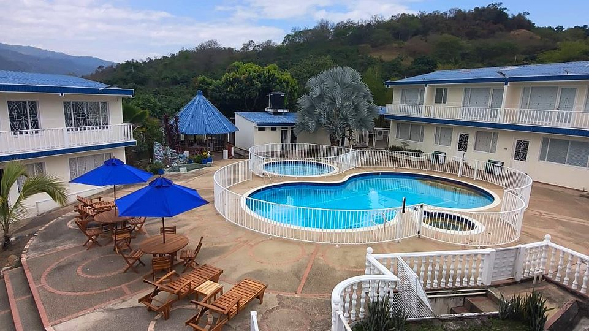

Hotel cerca de Anapoima: una alternativa campestre en Tena
Anapoima es uno de los destinos de clima cálido más buscados cerca de Bogotá. Aquí tienes qué hacer allí, cómo se compara con Tena y por qué Cabaleón es una opción si buscas campo y silencio.
Lectura de 7 minHotel Cabaleón
Si buscas hotel en Anapoima o cerca, Hotel Cabaleón es una alternativa campestre en Tena, a cerca de una hora: piscinas, jacuzzi, sauna y desayuno incluido, en 9.000 m² de jardines y lejos del movimiento del pueblo. Aquí te contamos qué hacer en Anapoima y cómo elegir entre los dos.
Dónde dormir cerca de Anapoima: Hotel Cabaleón
Hotel Cabaleón es un hotel campestre en la vereda Escalante de Tena (Cundinamarca), a cerca de una hora de Anapoima, pasando por La Mesa. Tiene 15 habitaciones y una cabaña, con desayuno e impuestos incluidos, desde $250.000 la noche. En 9.000 m² de jardines frente a la Cordillera Oriental hay piscina para adultos (de 90 a 170 cm), piscina infantil (60 cm), jacuzzi, sauna, baño turco, gimnasio, cancha polideportiva, el Restaurante Mangolé y Cabalante Bar.
| Habitación | Capacidad | Tamaño | Desde, por noche |
|---|---|---|---|
| Suite Cabaleón (hay 3) | Hasta 4 personas | 40 m² | $280.000 |
| Cabaña Cabaleón (hay 1) | Hasta 2 personas | 32 m² | $280.000 |
| Habitación Familiar Cuádruple (hay 2) | Hasta 4 personas | 25 m² | $280.000 |
| Habitación Estándar Triple (hay 10) | Hasta 3 personas | 24 m² | $250.000 |
El valor cambia con la fecha, entre $250.000 y $450.000 por noche. Se admiten mascotas en habitaciones seleccionadas por $70.000 la noche. Todos los datos del hotel están en Hotel en Tena, Cundinamarca, y el valor exacto de tus fechas, en la reserva en línea.
Anapoima en datos
| Dato | Anapoima, Cundinamarca |
|---|---|
| Ubicación | Provincia del Tequendama, al suroccidente de Bogotá |
| Distancia a Bogotá | 87 km |
| Altitud media | 710 metros sobre el nivel del mar |
| Clima | Cálido y seco, con unos 26 °C de temperatura media |
| Eventos | Encuentro de danzas «Danzando con el Sol», Encuentro Nacional de Bandas y la Clásica de Anapoima de ciclismo |
| Municipios vecinos | La Mesa (al norte), El Colegio (al oriente), Apulo, Viotá, Quipile y Jerusalén |
Qué hacer en Anapoima
1. El Parque de la Bienvenida
Es el parque principal, con una representación del cacique Poyma y la princesa Hanna que cuenta parte de la historia del pueblo. Lo rodean cafés y tiendas de comida local.
2. Los miradores
En el casco urbano está el Mirador Las Abejas. En las veredas Panamá y Piedra Bocá, los miradores de San Judas y Los 3 Nevados son buenos para caminar.
3. El río y las quebradas
El río Anapoima es el principal atractivo de agua del municipio, y en las afueras está la quebrada La Campuna. Pregunta en el pueblo por el estado del agua y los accesos antes de bañarte.
4. El Camino Real de Las Delicias
Es un camino de cerca de 1 km que atraviesa la vereda La Chica y termina en el río Bogotá. La entrada está sobre la carretera Anapoima-La Mesa, unos 12 km al sur del peaje San Pedro. Conviene recorrerlo entre las 7:00 a. m. y las 5:00 p. m.
¿Anapoima o Tena? Cómo elegir
| Anapoima | Hotel Cabaleón, en Tena | |
|---|---|---|
| Distancia a Bogotá | 87 km | Unos 66 km hasta Tena, cerca de 2 horas |
| Clima | Cálido y seco, unos 26 °C de media | De 24 °C a 28 °C de día y noches frescas |
| Ambiente | Pueblo turístico, con más movimiento | Campo tranquilo, 9.000 m² de jardines frente a la cordillera |
| Ideal para | Recorrer pueblo, cafés y eventos | Descansar con piscinas, jacuzzi, sauna y desayuno incluido |
No tienes que elegir uno solo: puedes dormir en Cabaleón y pasar una mañana en Anapoima, o al revés.
Plan de fin de semana: Anapoima y Cabaleón
- Sábado en la mañana: el Parque de la Bienvenida y el Mirador Las Abejas en Anapoima.
- Al mediodía: sigue hacia La Mesa y de ahí unos 40 minutos hasta el hotel. Almuerza en Mangolé, de 12:30 a 3:00 p. m.
- Tarde: check-in desde las 3:00 p. m., piscina hasta las 5:30 p. m. y cena en Mangolé.
- Domingo: desayuno incluido, sauna y jacuzzi, y check-out hasta las 2:00 p. m.
Cómo llegar de Anapoima a Hotel Cabaleón
El trayecto toma cerca de una hora. Anapoima y La Mesa son vecinos, a unos 15 km; desde La Mesa son unos 40 minutos más. Revisa el tiempo del día en Waze o Google Maps en carro. El último tramo antes de la llegada es una vía veredal, así que conviene hacerlo con luz de día la primera vez. Al confirmar tu reserva te enviamos el pin exacto por WhatsApp. Hay parqueadero gratuito en el hotel. Si vienes desde Bogotá, aquí está la ruta completa a Tena.
Otros planes en la zona
Mira también qué hacer en La Mesa, qué hacer en Mesitas del Colegio y nuestro comparativo de pueblos de clima cálido cerca de Bogotá.
Fuentes: ficha del municipio de Anapoima en Wikipedia (consultada el 6 de noviembre de 2026), Infobae (22 de enero de 2025) e información de Hotel Cabaleón.
Tu descanso comienza aquí
Elige fechas y habitaciones en nuestra página: ves tu factura al instante, con impuestos y desayuno incluidos, y confirmas con el anticipo del 50 % o el pago total. Directo con el hotel, sin intermediarios.
Preguntas frecuentes
¿Hay un hotel campestre con piscina cerca de Anapoima?
Sí. Hotel Cabaleón, en la vereda Escalante de Tena, queda a cerca de una hora de Anapoima, pasando por La Mesa. Tiene piscinas, jacuzzi, sauna, turco y desayuno incluido.
¿Qué hacer en Anapoima?
Visitar el Parque de la Bienvenida, subir a los miradores Las Abejas, San Judas y Los 3 Nevados, conocer el río Anapoima y la quebrada La Campuna y recorrer el Camino Real de Las Delicias.
¿Cómo es el clima de Anapoima?
Cálido y seco, con unos 26 °C de temperatura media. Está a 710 metros de altura.
¿Cuántas horas se gastan de Bogotá a Anapoima?
Anapoima está a 87 km de Bogotá, al suroccidente. El tiempo depende del tráfico a la salida de la ciudad, así que conviene revisarlo en Waze o Google Maps.
¿Anapoima o Tena para un fin de semana?
Anapoima es mejor si quieres pueblo y movimiento; Tena, si buscas campo y tranquilidad. Hotel Cabaleón permite dormir en el campo y visitar Anapoima en una mañana.
¿Cuánto cuesta una noche en Hotel Cabaleón?
Entre $250.000 y $450.000 por noche, según la habitación y la fecha, con desayuno e impuestos incluidos.
¿Qué es más caliente, Anapoima o Villeta?
Anapoima suele ser algo más caliente: está a 710 metros de altura y su temperatura media ronda los 26 °C, mientras Villeta está a 850 metros, con 24 °C a 25 °C.
¿Hay hoteles pet friendly cerca de Anapoima?
Sí. Hotel Cabaleón, a cerca de una hora de Anapoima, admite mascotas en habitaciones seleccionadas, previa reserva, por $70.000 por mascota y por noche.
Equipo de Hotel CabaleónComplejo turístico campestre en Tena, Cundinamarca. Publicado el .